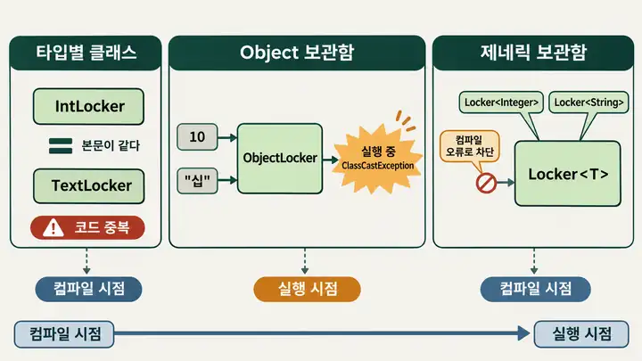
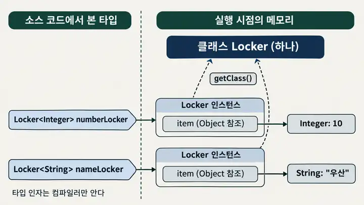
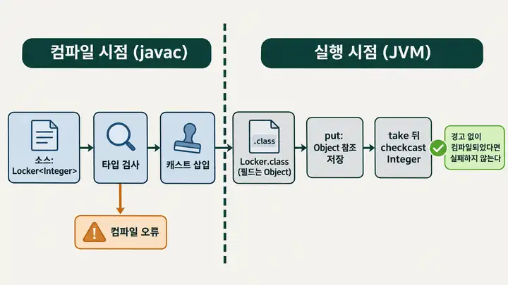
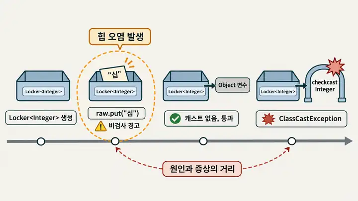

자바 중급 2편 / 01회
제네릭 1 — 타입 매개변수가 필요한 이유
타입별 클래스의 중복과 Object 보관함의 캐스팅 위험을 거쳐, 제네릭이 타입 검사를 컴파일 시점으로 옮기는 방식을 JDK 21의 컴파일 오류·바이트코드·클래스 파일로 확인한다.
오늘 끝나면 할 수 있는 것
- 타입마다 클래스를 만드는 방식과
Object로 받는 방식이 각각 무엇을 잃는지 설명하고,ClassCastException이 어느 바이트코드 명령에서 어떤 조건으로 발생하는지 말할 수 있다. - 제네릭 클래스를 선언하고 사용하며, 코드에서 제네릭 타입·타입 매개변수·타입 인자·매개변수화된 타입·raw 타입을 정확히 짚을 수 있다.
javap출력에서 제네릭 보관함과Object보관함의 호출 지점이 같은 명령으로 컴파일됨을 확인하고, 제네릭의 안전성을 "컴파일 시점 검사와 컴파일러가 넣은 캐스트"로 설명할 수 있다.- 타입 인자에 기본형을 쓸 수 없는 이유와 정적 멤버에서 타입 매개변수를 쓸 수 없는 이유를 "실행 시점의 클래스는 하나"라는 사실에서 끌어낼 수 있다.
- raw 타입이 섞인 코드에서 힙 오염이 일어나는 줄과
ClassCastException이 발생하는 줄을 구분해 예측할 수 있다.
핵심 강의 → 핵심 요약 → 실무 재판단 → 적용 연습 → 이해 확인
01 핵심 강의
이 강의의 차례 · 소제목 14개
이 회차의 질문: 타입이 다르면 같은 코드를 다시 써야 하는가
물건 하나를 넣어 두었다가 다시 꺼내는 보관함을 클래스로 만든다고 하자. 필드 하나, 넣는 메서드 하나, 꺼내는 메서드 하나면 된다. 넣고 꺼내는 논리는 내용물이 정수든 문자열이든 악기든 달라지지 않는다. 그런데 자바에서 이 클래스를 쓰려면 필드와 매개변수와 반환값에 타입을 적어야 하고, 타입을 적는 순간 그 클래스는 한 가지 내용물만 다루는 클래스가 된다.
이것은 자바가 정적 타입 언어(statically typed language)이기 때문에 생기는 일이다. 자바 언어 명세(JLS) 4장은 모든 변수와 모든 식이 컴파일 시점에 알려진 타입을 가진다고 밝힌다. 컴파일러는 이 타입을 근거로 "이 값을 이 변수에 넣어도 되는가", "이 객체에 이 메서드를 호출할 수 있는가"를 프로그램이 한 줄도 실행되기 전에 검사한다. 타입이 맞지 않는 코드가 실행되기 전에 걸러지는 이 성질을 이 회차에서는 타입 안전성(type safety)이라고 부른다.
타입 안전성에는 값이 따른다. 검사를 받으려면 타입을 구체적으로 적어야 하고, 구체적으로 적은 코드는 다른 타입에 다시 쓸 수 없다. 반대로 어떤 타입이든 받도록 느슨하게 적으면 코드는 한 벌로 줄지만 컴파일러가 검사할 근거도 함께 사라진다. 이 회차는 두 길을 차례로 끝까지 가 본 다음, 둘을 함께 얻는 방법인 제네릭(generics)에 도착한다. 순서는 다음과 같다.
- 타입마다 클래스를 따로 만든다. 안전하지만 같은 코드가 타입 수만큼 늘어난다.
Object와 다형성으로 한 벌로 줄인다. 중복은 사라지지만 검사가 실행 시점으로 밀려난다.- 타입을 매개변수로 받는 클래스를 만든다. 한 벌의 코드에 컴파일 시점 검사가 돌아온다.
- 컴파일러가 만든 클래스 파일을 열어, 제네릭이 실행 시점에는 어떤 모습으로 남는지 확인한다.
실습 환경: JDK 21과 도구 세 개
이 회차의 예제는 JDK 21 하나만 있으면 따라 할 수 있다. 외부 라이브러리도 빌드 도구도 필요 없다. IDE를 쓴다면 프로젝트의 JDK를 21로 맞추고 클래스를 만들어 실행하면 되고, 터미널만 쓴다면 빈 폴더 하나에 소스 파일을 모아 두면 된다. 예제 클래스는 모두 패키지 선언이 없는 기본 패키지에 둔다. 폴더 하나에서 컴파일과 실행, 클래스 파일 분석을 바로 하기 위해서다.
java -version # 21로 시작하는지 확인한다
javac -encoding UTF-8 -Xlint:all *.java # 소스를 검사하고 클래스 파일을 만든다
java GenericMain # main이 있는 클래스를 실행한다
javap -c -p GenericMain # 클래스 파일의 바이트코드를 읽는다
javap -v -p Locker # 상수 풀, 디스크립터, 속성까지 읽는다세 도구가 맡는 일을 구분해 두자. javac는 소스 파일을 읽어 타입을 검사하고 클래스 파일을 만든다. 제네릭과 관련된 검사는 전부 이 단계에서 일어난다. java는 JVM을 띄워 클래스 파일을 실행한다. javap는 클래스 파일을 사람이 읽을 수 있는 글로 풀어 보여 주는 도구로, -c는 메서드의 바이트코드를, -p는 private 멤버까지, -v는 상수 풀과 디스크립터, 속성까지 출력한다.
이 회차에서 javap를 여러 번 쓰는 까닭은 제네릭이 컴파일러와 JVM 사이에 걸쳐 있는 기능이기 때문이다. 소스에 적은 것과 클래스 파일에 남은 것이 다르고, 그 차이를 직접 보아야 제네릭이 무엇을 보장하고 무엇을 보장하지 않는지가 분명해진다. -Xlint:all도 같은 이유로 붙인다. javac는 제네릭을 잘못 쓴 코드에 대해 기본으로는 "uses unchecked or unsafe operations"라는 요약 안내만 내고 넘어가는데, 이 옵션을 주면 어느 줄이 왜 문제인지를 경고로 보여 준다. 이 경고의 뜻은 raw 타입을 다룰 때 다시 나온다.
타입마다 클래스를 만들면 생기는 일
가장 먼저 떠오르는 방법대로 정수를 담는 보관함을 만든다.
public class IntLocker {
private Integer item;
public void put(Integer item) {
this.item = item;
}
public Integer take() {
return item;
}
}문자열도 보관해야 한다면 타입만 바꾼 클래스가 하나 더 필요하다.
public class TextLocker {
private String item;
public void put(String item) {
this.item = item;
}
public String take() {
return item;
}
}쓰는 쪽 코드는 나무랄 데가 없다.
IntLocker numberLocker = new IntLocker();
numberLocker.put(10);
Integer number = numberLocker.take(); // 캐스팅이 필요 없다
TextLocker nameLocker = new TextLocker();
nameLocker.put("우산");
String name = nameLocker.take();
// nameLocker.put(10);
// 컴파일 오류: incompatible types: int cannot be converted to String두 클래스는 타입 안전하다. TextLocker의 put은 매개변수가 String이므로 정수를 넣는 코드는 컴파일되지 않고, take는 반환 타입이 String이므로 꺼낸 값을 캐스팅 없이 String 변수에 받는다. 넣을 때와 꺼낼 때 모두 컴파일러가 타입을 알고 있다.
문제는 두 클래스의 본문이다. 타입 이름이 적힌 세 군데(필드, put의 매개변수, take의 반환 타입)를 빼면 한 글자도 다르지 않다. 보관할 타입이 하나 늘 때마다 클래스가 하나씩 늘어서, 실수와 날짜와 회원을 보관하려면 DoubleLocker, DateLocker, MemberLocker가 필요하다. 각각은 별도의 소스 파일이고, 별도의 클래스 파일로 컴파일되며, 실행 중에는 JVM이 각각을 서로 관계없는 클래스로 로딩한다.
중복의 비용은 클래스의 개수보다 변경에서 드러난다. 보관함에 "비어 있을 때 꺼내면 예외를 던진다"는 규칙을 더하기로 했다면 모든 보관함 클래스를 똑같이 고쳐야 하고, 하나라도 빠뜨리면 타입에 따라 동작이 다른 보관함이 생긴다. 한 칸짜리 보관함이 아니라 수백 줄짜리 리스트나 맵 구현이었다면 이 방식은 유지할 수 없다. 자료 구조의 논리는 내용물의 타입과 무관한데, 타입을 고정해야만 검사를 받을 수 있다는 것이 여기서의 딜레마다.
다형성으로 중복을 없애려는 시도
자바 기본편에서 본 다형성을 떠올리면 해결책이 하나 보인다. 부모 타입의 변수는 자식 타입의 인스턴스를 참조할 수 있고, 모든 클래스는 Object의 자식이다. 그렇다면 필드와 매개변수와 반환 타입을 Object로 선언한 보관함 하나가 모든 타입을 담을 수 있다.
public class ObjectLocker {
private Object item;
public void put(Object item) {
this.item = item;
}
public Object take() {
return item;
}
}public class ObjectMain {
public static void main(String[] args) {
ObjectLocker numberLocker = new ObjectLocker();
numberLocker.put(10);
Integer number = (Integer) numberLocker.take();
System.out.println("number = " + number);
ObjectLocker nameLocker = new ObjectLocker();
nameLocker.put("우산");
String name = (String) nameLocker.take();
System.out.println("name = " + name);
numberLocker.put("십");
Integer wrong = (Integer) numberLocker.take();
System.out.println("wrong = " + wrong);
}
}number = 10
name = 우산
Exception in thread "main" java.lang.ClassCastException: class java.lang.String cannot be cast to class java.lang.Integer (java.lang.String and java.lang.Integer are in module java.base of loader 'bootstrap')
at ObjectMain.main(ObjectMain.java:14)클래스는 하나로 줄었고 앞의 두 묶음은 뜻대로 동작한다. 그리고 마지막 묶음에서 프로그램이 죽는다. 한 줄씩 따라가 보자.
4번 줄 numberLocker.put(10). 인자는 int인데 매개변수는 Object다. 메서드 호출 문맥에서는 박싱 변환 뒤에 참조 넓히기 변환을 이어 붙이는 것이 허용되므로(JLS §5.3), 컴파일러는 10을 Integer로 박싱하고 그 Integer를 Object로 올려 넘긴다. javap -c ObjectMain으로 보면 이렇게 되어 있다.
9: bipush 10
11: invokestatic #10 // Method java/lang/Integer.valueOf:(I)Ljava/lang/Integer;
14: invokevirtual #16 // Method ObjectLocker.put:(Ljava/lang/Object;)V5번 줄 (Integer) numberLocker.take(). take의 반환 타입은 Object다. 컴파일러가 아는 것은 "어떤 객체의 참조가 돌아온다"는 것뿐이므로, Integer 변수에 넣으려면 프로그래머가 다운캐스팅을 적어야 한다. 이 캐스트는 바이트코드에서 checkcast라는 명령 하나가 된다.
17: aload_1
18: invokevirtual #20 // Method ObjectLocker.take:()Ljava/lang/Object;
21: checkcast #11 // class java/lang/Integer
24: astore_213번 줄 numberLocker.put("십"). 이름이 numberLocker인 보관함에 문자열을 넣는 실수다. 그러나 String도 Object이므로 컴파일러에게 이 줄은 4번 줄과 똑같이 올바른 코드다. 변수 이름에 담긴 "숫자만 넣는다"는 약속은 사람만 읽을 수 있다.
14번 줄 (Integer) numberLocker.take(). 5번 줄과 변수 이름만 다른 코드이고 똑같은 명령으로 컴파일된다. 하지만 이번에 take가 돌려준 참조는 String 인스턴스를 가리키고 있고, checkcast가 이를 발견해 ClassCastException을 던진다.
Object 보관함에는 구멍이 두 개 있는 셈이다. 입구에서는 무엇이든 들어간다. 출구에서는 꺼낸 값이 무엇인지 컴파일러가 모르기 때문에 프로그래머가 "이것은 Integer다"라고 주장해야 하고, 그 주장이 맞는지는 실행해 보아야 안다.
캐스트의 정체: 실행 시점에 치르는 검사
캐스트 식 (Integer) x를 두고 컴파일러가 확인하는 것은 "이 변환이 성립할 가능성이 있는가"까지다. Object 타입의 참조가 Integer 인스턴스를 가리키고 있을 수도 있으므로 변환 자체는 허용된다. 실제로 그러한지는 컴파일러가 알 수 없다. 그래서 JLS §5.5는 이런 캐스트에 대해 식의 값이 가리키는 객체의 클래스를 실행 시점에 검사하며, 그 결과 ClassCastException이 발생할 수 있다고 정한다.
그 검사를 수행하는 것이 JVM 명령 checkcast다. JVM 명세(JVMS §6.5)가 정한 동작은 다음과 같다.
- 피연산자 스택 맨 위의 참조가
null이면 아무 일도 하지 않고 통과시킨다. null이 아니면, 참조가 가리키는 객체의 클래스가 대상 클래스와 같거나 그 하위 클래스인지(대상이 인터페이스라면 그것을 구현하는지) 확인한다. 맞으면 스택을 그대로 두고 다음 명령으로 넘어간다.- 맞지 않으면
ClassCastException을 던진다.
검사 대상은 변수의 선언 타입이 아니라 힙에 있는 객체의 실제 클래스다. 자바 기본편의 다운캐스팅에서 본 대로 객체는 자신이 어느 클래스의 인스턴스인지를 알고 있고, checkcast는 그 정보를 읽는다. 예외 메시지 class java.lang.String cannot be cast to class java.lang.Integer에서 앞쪽이 실제 객체의 클래스이고 뒤쪽이 캐스트의 대상이다. null이 통과한다는 점도 기억해 두자. 빈 보관함에서 꺼낸 null을 (Integer)로 캐스팅해도 예외는 나지 않는다.
원인과 증상이 떨어져 있다
예외의 스택 트레이스는 14번 줄을 가리킨다. 그러나 고쳐야 할 곳은 13번 줄이다. 예제에서는 두 줄이 붙어 있어 금방 보이지만, 실제 프로그램에서 넣는 코드와 꺼내는 코드는 서로 다른 클래스에 있고 실행되는 시각도 다르다. 잘못된 값을 넣은 코드는 아무 일 없이 끝나고, 한참 뒤에 그 값을 꺼낸 죄 없는 코드에서 예외가 난다. 스택 트레이스에는 넣은 쪽의 흔적이 남아 있지 않다.
꺼내는 쪽에서 방어할 수는 있다. instanceof로 먼저 확인하는 것이다.
Object value = numberLocker.take();
if (value instanceof Integer n) {
System.out.println("number = " + n);
} else {
// Integer가 아닌 것이 들어 있다. 여기서 무엇을 할 것인가?
}예외는 피했지만 달라진 것은 없다. 검사는 여전히 실행 시점에 일어나고, 꺼내는 모든 자리에 같은 방어 코드가 필요하며, else 가지에서 할 수 있는 일이 마땅치 않다. 잘못은 넣는 쪽에 있는데 뒷감당은 꺼내는 쪽이 하는 구조가 그대로다.
지금까지의 두 방식을 나란히 놓으면 서로 반대쪽을 잃고 있다.
| 방식 | 클래스 수 | 넣을 때의 검사 | 꺼낼 때 | 오류가 드러나는 때 |
|---|---|---|---|---|
| 타입별 클래스 | 타입 수만큼 | 컴파일러가 한다 | 캐스트가 필요 없다 | 컴파일 시점 |
Object 보관함 | 하나 | 없다 | 프로그래머가 캐스트를 적는다 | 실행 시점(checkcast) |
필요한 것은 "클래스는 하나이되, 이 보관함은 Integer용이라는 사실을 컴파일러가 알게 하는 방법"이다. Object 보관함에서 그 사실은 변수 이름과 프로그래머의 머릿속에만 있었다. 그것을 타입 선언으로 옮기면 컴파일러가 읽을 수 있다.

제네릭 적용: 타입을 매개변수로 받는 클래스
public class Locker<T> {
private T item;
public void put(T item) {
this.item = item;
}
public T take() {
return item;
}
}ObjectLocker와 비교하면 Object가 있던 세 자리에 T가 들어갔고, 클래스 이름 뒤에 <T>가 붙었다. 클래스 이름 뒤의 <T>는 "이 클래스는 타입 하나를 매개변수로 받으며, 클래스 본문에서는 그것을 T라고 부르겠다"는 선언이다. 본문의 T는 아직 정해지지 않은 타입을 가리키는 이름이고, 필드의 타입, 매개변수의 타입, 반환 타입처럼 타입이 올 자리에 쓴다. T가 무엇인지는 이 클래스를 쓰는 코드가 정한다.
public class GenericMain {
public static void main(String[] args) {
Locker<Integer> numberLocker = new Locker<Integer>();
numberLocker.put(10);
Integer number = numberLocker.take();
System.out.println("number = " + number);
Locker<String> nameLocker = new Locker<>();
nameLocker.put("우산");
String name = nameLocker.take();
System.out.println("name = " + name);
}
}number = 10
name = 우산3번 줄의 Locker<Integer>는 "T 자리에 Integer를 넣은 Locker"라는 타입이다. 이 타입의 변수를 통해 보관함을 쓸 때 컴파일러는 Locker의 선언에서 T를 모두 Integer로 바꿔 읽는다.
| 선언에 적힌 것 | Locker<Integer>로 읽으면 | Locker<String>으로 읽으면 |
|---|---|---|
private T item | Integer item | String item |
void put(T item) | void put(Integer item) | void put(String item) |
T take() | Integer take() | String take() |
그래서 5번 줄은 캐스트 없이 Integer 변수에 결과를 받고, 10번 줄은 String 변수에 받는다. Object 보관함의 구멍 두 개가 정말 막혔는지 잘못된 코드를 넣어 확인하자.
public class Wrong {
public static void main(String[] args) {
Locker<Integer> numberLocker = new Locker<>();
numberLocker.put("십");
String s = numberLocker.take();
}
}Wrong.java:4: error: incompatible types: String cannot be converted to Integer
numberLocker.put("십");
^
Wrong.java:5: error: incompatible types: Integer cannot be converted to String
String s = numberLocker.take();
^
Note: Some messages have been simplified; recompile with -Xdiags:verbose to get full output
2 errorsObject 보관함에서는 실행 중에 꺼내는 줄에서 터지던 실수가, 이제 컴파일 단계에서 그것도 값을 잘못 넣은 바로 그 줄에서 잡힌다. 원인 지점과 오류가 보고되는 지점이 같아졌다. 타입별 클래스가 주던 안전성과 Object 보관함이 주던 재사용을 클래스 하나가 함께 가진다.
메서드의 매개변수와 나란히 놓고 보기
"타입 매개변수"라는 이름은 메서드의 매개변수와 구조가 같아서 붙었다. 메서드는 본문에서 쓸 값을 선언할 때 정하지 않고 매개변수로 비워 두었다가, 호출하는 쪽이 넘긴 인자로 채운다. 제네릭 클래스는 본문에서 쓸 타입을 비워 두었다가, 사용하는 쪽이 넘긴 타입으로 채운다. 넘기는 것이 값이냐 타입이냐가 다르다.
| 메서드 | 제네릭 클래스 | |
|---|---|---|
| 비워 두는 것 | 값 | 타입 |
| 선언하는 자리 | 메서드 이름 뒤의 괄호 (int price) | 클래스 이름 뒤의 꺾쇠 <T> |
| 채우는 자리 | 호출 pay(3000) | 타입을 쓰는 곳 Locker<Integer> |
| 채워지는 때 | 실행 시점, 호출할 때마다 | 컴파일 시점, 소스에 적힌 대로 |
마지막 줄의 차이가 중요하다. 메서드의 인자는 프로그램이 실행되면서 스택 프레임에 실제로 전달되는 값이다. 타입 인자는 컴파일러가 소스를 검사할 때 쓰는 정보다. 이 차이가 뒤에 나오는 여러 제약의 뿌리가 된다.
다이아몬드와 타입 추론
3번 줄은 new Locker<Integer>()라고 타입 인자를 양쪽에 모두 적었고, 8번 줄은 new Locker<>()라고 오른쪽을 비웠다. 빈 꺾쇠 <>는 모양 때문에 다이아몬드(diamond)라고 부른다. Java SE 7부터는 컴파일러가 문맥에서 타입 인자를 추론할 수 있으면 생성자 호출의 타입 인자를 생략할 수 있다. 8번 줄에서는 왼쪽 변수의 타입이 Locker<String>이므로 컴파일러가 오른쪽의 T를 String으로 정한다. 두 표기는 같은 바이트코드로 컴파일된다.
추론에는 근거가 필요하다. JDK 10에 들어온 지역 변수 타입 추론 var와 다이아몬드를 한 줄에 함께 쓰면 양쪽이 서로에게 타입을 묻는 꼴이 된다.
var locker = new Locker<>(); // Locker<Object>로 추론된다
locker.put("우산");
String s = locker.take();
// 컴파일 오류: incompatible types: Object cannot be converted to String컴파일러는 T를 정할 단서가 없으므로 Object로 추론하고, locker는 Locker<Object> 타입의 변수가 된다. 첫 두 줄은 아무 경고 없이 컴파일되어서 의도와 다른 타입이 조용히 정해진다. var를 쓸 때는 new Locker<String>()처럼 오른쪽에 타입 인자를 적는다.
컴파일러가 실제로 만든 것
앞의 표에서 "T를 Integer로 바꿔 읽는다"고 했다. 그렇다면 컴파일러가 Locker<Integer>용 클래스와 Locker<String>용 클래스를 따로 만들어 주는 것일까. 폴더를 보면 Locker.class 파일은 하나뿐이다. javap -c GenericMain으로 사용하는 쪽이 어떻게 컴파일되었는지 보자. main의 3~5번 줄에 해당하는 부분이다.
0: new #7 // class Locker
3: dup
4: invokespecial #9 // Method Locker."<init>":()V
7: astore_1
8: aload_1
9: bipush 10
11: invokestatic #10 // Method java/lang/Integer.valueOf:(I)Ljava/lang/Integer;
14: invokevirtual #16 // Method Locker.put:(Ljava/lang/Object;)V
17: aload_1
18: invokevirtual #20 // Method Locker.take:()Ljava/lang/Object;
21: checkcast #11 // class java/lang/Integer
24: astore_2앞에서 본 ObjectMain의 바이트코드와 나란히 놓으면 클래스 이름 ObjectLocker가 Locker로 바뀐 것 말고는 명령과 순서가 같다. 여기서 세 가지를 읽을 수 있다.
- 0번: 생성되는 것은 그냥
Locker다.Integer라는 타입 인자는 객체를 만드는 명령 어디에도 없다. - 14번, 18번:
put은Object를 받는 메서드로,take는Object를 돌려주는 메서드로 호출된다. 소스에서T였던 자리가 클래스 파일에서는Object다. - 21번: 소스에 적지 않은
checkcast Integer가 들어 있다. 프로그래머가 쓰던 캐스트를 컴파일러가 대신 넣었다.
Locker.class 쪽도 열어 보자. javap -v -p Locker의 출력에서 클래스 선언, 필드, take 메서드 부분만 옮긴다(상수 풀과 줄 번호 표는 생략했다).
public class Locker<T extends java.lang.Object> extends java.lang.Object
...
private T item;
descriptor: Ljava/lang/Object;
flags: (0x0002) ACC_PRIVATE
Signature: #14 // TT;
...
public T take();
descriptor: ()Ljava/lang/Object;
flags: (0x0001) ACC_PUBLIC
Code:
stack=1, locals=1, args_size=1
0: aload_0
1: getfield #7 // Field item:Ljava/lang/Object;
4: areturn
Signature: #22 // ()TT;
...
Signature: #23 // <T:Ljava/lang/Object;>Ljava/lang/Object;항목마다 두 가지 정보가 있다. descriptor는 JVM이 필드와 메서드를 식별하고 연결할 때 쓰는 타입 표기이고, 여기에는 T가 없다. 필드는 Ljava/lang/Object;, 곧 Object 참조 하나다. Signature는 별도의 속성(attribute)이며 TT;는 "타입 변수 T"를 뜻한다. JVM 명세는 이 속성이 JVM의 타입 체계 밖에 있는 자바 언어의 선언을 부호화한 것이고, 리플렉션과 디버깅, 그리고 클래스 파일만 있을 때의 컴파일을 돕는다고 설명한다(JVMS §4.7.9.1). 라이브러리를 소스 없이 jar로만 받아도 컴파일러가 Locker<String>을 검사할 수 있는 것은 이 속성 덕분이다.
정리하면 클래스 파일 안의 Locker는 실행 코드로 보면 ObjectLocker와 같다. 제네릭 선언은 컴파일러와 리플렉션이 읽을 기록으로만 남아 있다. 실행 중인 프로그램에서 이를 확인하는 코드는 다음과 같다.
import java.lang.reflect.Field;
public class SameClassMain {
public static void main(String[] args) throws Exception {
Locker<Integer> numberLocker = new Locker<>();
Locker<String> nameLocker = new Locker<>();
System.out.println(numberLocker.getClass() == nameLocker.getClass());
System.out.println(numberLocker.getClass().getName());
Field field = Locker.class.getDeclaredField("item");
System.out.println(field.getType());
System.out.println(field.getGenericType());
}
}true
Locker
class java.lang.Object
T첫 줄의 true는 JLS §8.1.2가 예제까지 들어 못박아 둔 결과다. 제네릭 클래스 선언 하나에서 타입 인자의 조합마다 타입이 하나씩 나오지만, 명세의 표현으로 이 타입들은 모두 실행 시점에 같은 클래스를 공유한다. Locker<Integer>와 Locker<String>은 컴파일러가 구분하는 두 타입이고, JVM이 아는 클래스는 Locker 하나다. 셋째 줄과 넷째 줄은 리플렉션이 같은 필드에 대해 두 가지 답을 준다는 것을 보여 준다. JVM이 쓰는 타입은 Object이고, Signature 속성에서 읽어 온 선언상의 타입은 T다.
메모리에서 본 두 보관함
스택 (main의 프레임) 힙
numberLocker ─────────▶ ┌ Locker 인스턴스 ┐ ┌ Integer 인스턴스 ┐
│ item ──────────┼──────▶ │ value = 10 │
└────────────────┘ └──────────────────┘
nameLocker ───────────▶ ┌ Locker 인스턴스 ┐ ┌ String 인스턴스 ─┐
│ item ──────────┼──────▶ │ "우산" │
└────────────────┘ └──────────────────┘
· 두 Locker 인스턴스는 같은 클래스 Locker의 인스턴스다.
· 필드 item은 둘 다 Object 참조 한 칸이다.
· "Integer용", "String용"이라는 타입 인자를 기록한 칸은 인스턴스에도 Locker 클래스에도 없다.
두 보관함 인스턴스의 구조는 똑같다. 참조 한 칸짜리 필드가 있을 뿐이고, 어떤 타입 인자로 만들어졌는지는 저장되지 않는다. Locker<Integer>라는 정보가 있는 곳은 소스 코드의 변수 선언과, 그것을 읽고 검사한 컴파일러다.

그렇다면 무엇이 안전을 보장하는가
Locker<Integer>를 쓰는 코드가 실행되기까지- 타입 인자 확정컴파일러가 변수 선언에서 T가 Integer임을 읽는다. 다이아몬드라면 문맥에서 추론한다.
- 사용 지점 검사
put의 인자가 Integer로 변환되는가,take의 결과를 받는 쪽 타입에 대입할 수 있는가를 본다. 어긋나면 컴파일 오류다. - 번역타입 변수 자리는
Object로 바꾸고,take의 결과를 Integer로 쓰는 자리에checkcast Integer를 넣어 클래스 파일을 만든다. - 실행JVM은
Object참조를 넣고 꺼내며, 컴파일러가 넣어 둔checkcast를 수행한다.
3단계에서 타입 변수를 지우는 규칙을 타입 소거(type erasure, JLS §4.6)라고 하며, 정확한 규칙과 그 때문에 생기는 제약은 다음 회차에서 다룬다. 이 회차에서 붙잡아 둘 것은 역할 분담이다. 검사는 컴파일러가 하고, 실행 시점에는 Object 보관함과 같은 코드가 돈다. 따라서 제네릭을 썼다고 실행이 빨라지거나 느려지지 않는다. 두 main의 바이트코드가 같으니 하는 일도 같다.
그러면 21번 위치의 checkcast는 실패할 수 있는가. Object 보관함에서는 실패했다. 제네릭 보관함에서는 2단계가 그것을 막는다. Locker<Integer> 타입의 변수를 통해서는 Integer로 변환되는 값만 넣을 수 있도록 모든 put 호출이 검사되었으므로, take가 돌려주는 참조는 Integer 인스턴스를 가리키거나 null이다. 둘 다 checkcast를 통과한다.
JLS §4.12.2는 이 보장이 깨진 상태, 곧 매개변수화된 타입의 변수가 그 타입이 아닌 객체를 가리키는 상태를 힙 오염(heap pollution)이라 부르고, 그것이 일어날 수 있는 경우를 한정한다. raw 타입이 얽혀 컴파일 시점에 비검사 경고(unchecked warning)가 나오는 연산을 했거나, 실체화할 수 없는 원소 타입의 배열 변수를 raw이거나 제네릭이 아닌 상위 타입의 배열 변수로 가리켰을 때뿐이다. 뒤집어 말하면, 비검사 경고가 하나도 없이(억누른 것도 없이) 컴파일된 프로그램에서 컴파일러가 넣은 캐스트는 실패하지 않는다. 제네릭이 주는 타입 안전성의 정확한 내용이 이것이다.

checkcast를 수행한다.제네릭 용어와 관례
제네릭을 다루는 문서와 컴파일 오류 문구는 생김새가 비슷한 용어 몇 개를 엄격히 구분해 쓴다. 지금까지는 뜻을 풀어서 써 왔으니 이제 이름을 붙이자. 정의의 기준은 JLS다.
public class Locker<T> { ... }
│
└─ 타입 매개변수 T의 선언. 이 선언이 있으므로 Locker는 제네릭 클래스다
Locker<Integer> numberLocker = new Locker<>();
│ │ │
│ │ └─ 다이아몬드: 타입 인자를 문맥에서 추론하게 한다
│ └─ 타입 인자 Integer
└─ Locker<Integer> 전체가 매개변수화된 타입이다
Locker legacy = new Locker();
│
└─ 타입 인자 없이 쓴 Locker는 raw 타입이다
| 용어 | 뜻 | 예 |
|---|---|---|
| 제네릭 타입(generic type) | 타입 매개변수를 하나 이상 선언한 클래스나 인터페이스 | Locker<T> |
| 타입 매개변수(type parameter) | 선언부의 꺾쇠 안에 적은 이름. 본문에서 타입으로 쓰일 때는 타입 변수(type variable)라고 한다 | T |
| 타입 인자(type argument) | 쓰는 쪽이 타입 매개변수 자리에 넘기는 실제 타입 | Integer |
| 매개변수화된 타입(parameterized type) | 제네릭 타입에 타입 인자를 채워서 만든 타입 | Locker<Integer> |
| raw 타입(raw type) | 제네릭 타입의 이름을 타입 인자 목록 없이 쓴 것 | Locker |
| 다이아몬드(diamond) | 생성자 호출에서 타입 인자의 추론을 맡기는 빈 꺾쇠 | new Locker<>() |
JLS §8.1.2는 클래스 선언이 타입 변수를 하나 이상 선언하면 그 클래스가 제네릭이라고 정의한다. 인터페이스도 같은 방식으로 제네릭이 될 수 있고, 둘을 묶어 제네릭 타입이라고 부른다. 선언부의 꺾쇠 안에 적은 T가 타입 매개변수이고, 그 선언으로 생긴 이름을 클래스 본문에서 타입으로 쓸 때는 타입 변수라고 한다(JLS §4.4). 두 말은 같은 T를 선언하는 자리에서 보느냐 쓰는 자리에서 보느냐의 차이다. javac의 오류 문구에 나오는 type-variable이 이 타입 변수다.
매개변수화된 타입은 JLS §4.5의 용어로, 제네릭 타입의 이름 뒤에 타입 인자 목록을 붙인 C<T1,...,Tn> 꼴의 타입을 가리킨다. 명세의 표현으로는 제네릭인 클래스나 인터페이스 하나가 매개변수화된 타입의 집합을 정의한다. Locker<T>라는 선언 하나에서 Locker<Integer>, Locker<String>, Locker<int[]>가 모두 나온다. 변수의 타입으로 쓰는 것은 제네릭 타입 그 자체가 아니라 이렇게 타입 인자를 채운 매개변수화된 타입이다.
타입 매개변수와 타입 인자는 자주 섞여 쓰이지만 메서드의 매개변수와 인자만큼 다르다. 오라클의 자바 튜토리얼도 많은 개발자가 두 말을 구분 없이 쓴다는 점을 짚고, Foo<T>의 T는 타입 매개변수이고 Foo<String>의 String은 타입 인자라고 구분한다. 이 구분이 쓸모 있는 곳은 컴파일 오류를 읽을 때다. wrong number of type arguments는 쓰는 쪽이 넘긴 타입의 개수가 틀렸다는 말이고, non-static type variable T cannot be referenced from a static context는 선언한 쪽이 T를 쓸 수 없는 자리에 썼다는 말이다. 용어를 알면 오류가 어느 쪽 코드를 가리키는지 곧바로 알 수 있다.
이름 관례
타입 매개변수의 이름은 관례상 대문자 한 글자로 짓는다. 오라클 튜토리얼은 이 관례가 없으면 타입 변수와 보통의 클래스·인터페이스 이름을 구별하기 어렵다는 것을 이유로 든다. 자주 쓰는 글자는 다음과 같다.
| 글자 | 뜻 | JDK에서 볼 수 있는 곳 |
|---|---|---|
E | Element. 컬렉션에 담기는 원소 | List<E>, ArrayList<E> |
K, V | Key와 Value | Map<K, V> |
N | Number | 숫자 타입을 받는 자리 |
T | Type. 특별한 역할이 없는 일반적인 타입 | Optional<T>, Comparable<T> |
S, U, V | 둘째, 셋째, 넷째 타입 | 타입 매개변수가 여러 개일 때 |
JDK 21의 소스에서 이 관례를 그대로 확인할 수 있다. List<E>의 Javadoc은 E를 리스트에 담기는 원소의 타입으로, Map<K, V>의 Javadoc은 K를 맵이 관리하는 키의 타입, V를 키에 대응하는 값의 타입으로 설명한다. Function<T, R>처럼 결과(result)를 뜻하는 R을 쓰는 곳도 있다. 다만 관례는 문법이 아니다. 타입 매개변수의 이름은 식별자이기만 하면 되므로 여러 글자도 쓸 수 있고, 스프링 데이터 JPA의 JpaRepository<T, ID>는 식별자의 타입에 ID라는 두 글자 이름을 붙였다.
T는 예약어가 아니다
T가 키워드가 아니라 프로그래머가 고른 이름이라는 사실은 함정 하나를 만든다. 문자열 전용 보관함을 만들겠다는 생각으로 꺾쇠 안에 String을 적은 다음 코드를 보자.
public class StringLocker<String> {
private String item;
public void put(String item) {
this.item = item;
}
public int size() {
return item.length();
}
}StringLocker.java:9: error: cannot find symbol
return item.length();
^
symbol: method length()
location: variable item of type String
where String is a type-variable:
String extends Object declared in class StringLocker
1 errorString 타입의 변수에 length()가 없다는, 처음 보면 믿기 어려운 오류다. 마지막 두 줄이 답을 알려 준다. 여기서 String은 java.lang.String이 아니라 StringLocker에 선언된 타입 변수다. 클래스 이름 뒤의 꺾쇠는 타입을 "지정하는" 자리가 아니라 타입 매개변수를 "선언하는" 자리이므로, <String>은 String이라는 이름의 타입 매개변수를 새로 만든다. 클래스의 타입 매개변수는 클래스 본문 전체가 유효 범위이고(JLS §6.3), 같은 이름의 다른 타입 선언을 그 범위 안에서 가린다(§6.4.1). 그래서 본문의 String은 전부 이 타입 변수를 가리키게 되고, 타입 변수에 대해 컴파일러가 아는 것은 Object의 메서드뿐이다.
size() 메서드가 없었다면 이 클래스는 경고 하나 없이 컴파일된다. 그리고 StringLocker<Integer>라는 타입을 만들어 정수를 넣는 코드도 문제없이 컴파일되고 실행된다. 이름만 String일 뿐 Locker<T>와 똑같은 클래스이기 때문이다. 대문자 한 글자라는 관례는 이런 사고를 막는 장치이기도 하다. 실제 클래스 이름과 겹칠 일이 없는 이름을 쓰면 선언과 사용이 눈으로 구별된다.
타입 매개변수가 둘 이상일 때
타입 매개변수는 쉼표로 구분해 여러 개 선언할 수 있다. 이름과 수량처럼 서로 다른 타입의 값 두 개를 묶는 클래스를 만들어 보자.
public class Pair<K, V> {
private final K key;
private final V value;
public Pair(K key, V value) {
this.key = key;
this.value = value;
}
public K key() {
return key;
}
public V value() {
return value;
}
}쓰는 쪽은 선언된 개수만큼, 선언된 순서대로 타입 인자를 넘긴다. Pair<String, Integer>에서 K는 String, V는 Integer다. 개수나 순서가 어긋난 코드를 컴파일하면 이렇게 된다.
public class PairWrong {
public static void main(String[] args) {
Pair<String, Integer> a = new Pair<>(3, "우산");
Pair<String> b = null;
}
}PairWrong.java:3: error: incompatible types: cannot infer type arguments for Pair<>
Pair<String, Integer> a = new Pair<>(3, "우산");
^
reason: inference variable K has incompatible bounds
equality constraints: String
lower bounds: Integer
where K is a type-variable:
K extends Object declared in class Pair
PairWrong.java:4: error: wrong number of type arguments; required 2
Pair<String> b = null;
^
2 errors4번 줄의 오류는 문구 그대로다. 타입 인자가 둘 필요한데 하나만 넘겼다. 3번 줄의 오류는 다이아몬드의 추론이 실패한 경우라서 문구가 길지만, 읽는 법을 알면 원인이 그대로 적혀 있다. 컴파일러는 K를 정하려고 단서를 모았는데, 왼쪽 변수의 타입에서는 "K는 String과 같아야 한다(equality constraints)"가 나왔고 생성자의 첫 인자 3에서는 "K는 Integer를 받을 수 있어야 한다(lower bounds)"가 나왔다. 두 조건을 함께 만족하는 타입이 없으므로 추론할 수 없다는 것이다. 인자의 순서가 뒤바뀌었다는 뜻이다.
타입 인자는 참조 타입이어야 한다
정수를 보관하는 내내 Locker<Integer>라고 썼다. int를 그대로 쓰면 어떻게 되는가.
Locker<int> numberLocker = new Locker<>();Prim.java:3: error: unexpected type
Locker<int> numberLocker = new Locker<>();
^
required: reference
found: int
1 error컴파일러는 참조 타입이 올 자리에 int가 왔다고 말한다. JLS §4.5.1의 문법이 타입 인자를 참조 타입(과 다음 회차에서 다룰 와일드카드)으로 한정하기 때문이다. 참조 타입이기만 하면 되므로 클래스뿐 아니라 인터페이스, 배열, 다른 매개변수화된 타입도 타입 인자가 된다. Locker<Runnable>, Locker<int[]>, Locker<Locker<String>>은 모두 올바른 타입이다. int는 안 되지만 int[]는 되는 까닭은 배열이 객체이고 배열 타입이 참조 타입이기 때문이다.
이 제약은 앞 절에서 확인한 사실, 곧 모든 매개변수화된 타입이 클래스 하나를 공유한다는 데서 나온다. Locker.class에 들어 있는 take의 본문은 한 벌이고 그 내용은 다음 세 명령이다.
0: aload_0
1: getfield #7 // Field item:Ljava/lang/Object;
4: areturnJVM 명령의 대부분은 자신이 다루는 값의 타입을 명령 이름에 담고 있다(JVMS §2.11.1). 접두사 a는 참조, i는 int, l은 long이다. areturn은 참조만 반환할 수 있고 int를 반환하려면 ireturn이라는 다른 명령이 있어야 한다. 값을 두는 자리의 크기도 다르다. 지역 변수 한 칸은 int나 참조 하나를 담지만 long과 double은 두 칸을 차지한다(JVMS §2.6.1). 한 벌의 바이트코드가 Locker<Integer>와 Locker<int>와 Locker<long>을 함께 감당할 수는 없다. 클래스를 하나만 두는 방식에서 타입 인자로 허용되는 것은 "Object 참조 한 칸에 담을 수 있는 것", 곧 참조 타입뿐이다.
빈자리는 자바 중급 1편에서 다룬 래퍼 클래스와 오토박싱이 메운다. numberLocker.put(10)이 Integer.valueOf(10)을 거친다는 것은 앞의 바이트코드에서 보았다. 꺼내는 쪽에서 int 변수에 받으면 컴파일러는 캐스트 뒤에 언박싱까지 넣는다.
public class Unbox {
public static void main(String[] args) {
Locker<Integer> numberLocker = new Locker<>();
numberLocker.put(10);
int n = numberLocker.take();
System.out.println("n = " + n);
Locker<Integer> empty = new Locker<>();
int m = empty.take();
System.out.println("m = " + m);
}
}17: aload_1
18: invokevirtual #20 // Method Locker.take:()Ljava/lang/Object;
21: checkcast #11 // class java/lang/Integer
24: invokevirtual #24 // Method java/lang/Integer.intValue:()I
27: istore_2n = 10
Exception in thread "main" java.lang.NullPointerException: Cannot invoke "java.lang.Integer.intValue()" because the return value of "Locker.take()" is null
at Unbox.main(Unbox.java:9)5번 줄 한 줄에 소스에 없는 명령이 둘 들어갔다. checkcast Integer와 Integer.intValue() 호출이다. 9번 줄도 같은 모양으로 컴파일되는데, 빈 보관함의 take는 null을 돌려준다. checkcast는 null을 통과시키고, 이어지는 intValue() 호출이 null에 대한 메서드 호출이 되어 NullPointerException이 난다. 소스의 9번 줄에는 점(.)을 찍어 무언가를 호출하는 코드가 empty.take() 하나뿐이고 empty는 null이 아니어서 처음 보면 원인을 찾기 어렵다. 예외 메시지가 가리키는 Integer.intValue()가 컴파일러가 넣은 호출임을 알면 곧바로 읽힌다.
메모리 쪽에서도 하나 짚어 둘 것이 있다. Locker<Integer>의 필드에 들어 있는 것은 정수 10이 아니라 힙의 Integer 객체를 가리키는 참조다. 값 하나를 읽으려면 참조를 한 번 따라가야 하고, 값마다 객체가 하나씩 따로 있다. 보관함 한 칸에서는 드러나지 않는 차이지만, 같은 구조가 원소를 수없이 담는 컬렉션에도 그대로 적용된다는 점은 기억해 둘 만하다.
정적 멤버는 타입 매개변수를 쓸 수 없다
타입 매개변수의 유효 범위는 클래스 본문 전체지만, 그 안에서도 쓸 수 없는 자리가 있다. 정적 멤버다.
public class StaticBox<T> {
private static T shared;
public static T get() {
return shared;
}
}StaticBox.java:2: error: non-static type variable T cannot be referenced from a static context
private static T shared;
^
StaticBox.java:4: error: non-static type variable T cannot be referenced from a static context
public static T get() {
^
2 errorsJLS §6.5.5.1은 제네릭 클래스의 타입 매개변수를 가리키는 이름이 정적 문맥(static context)에 나타나면 컴파일 오류라고 정한다. 규칙만 외우면 금방 잊히지만, 이유는 지금까지 본 사실 둘을 이으면 나온다. 정적 필드는 인스턴스를 몇 개 만들든 클래스에 단 하나만 존재한다(JLS §8.3.1.1). 그리고 StaticBox<Integer>와 StaticBox<String>은 클래스 하나를 공유한다. 따라서 shared라는 필드는 프로그램 전체에 하나뿐인데, 그 하나의 타입이 Integer이면서 동시에 String일 수는 없다.
오류 문구의 non-static type variable이라는 표현도 같은 말을 한다. 클래스의 타입 매개변수는 "이 보관함은 무엇을 담는가"처럼 인스턴스를 쓰는 쪽마다 달리 정하는 것이어서 인스턴스 멤버와 짝을 이룬다. 클래스에 속한 정적 멤버 쪽에서는 어느 사용 지점의 T를 말하는지 정할 수 없다. 정적 멤버가 정말로 하나뿐이라는 것은 실행해서 확인할 수 있다.
public class CountingLocker<T> {
private static int created;
private T item;
public CountingLocker() {
created++;
}
public static int created() {
return created;
}
}public class CountingMain {
public static void main(String[] args) {
new CountingLocker<Integer>();
new CountingLocker<String>();
new CountingLocker<String>();
System.out.println(CountingLocker.created());
}
}3타입 인자가 다른 보관함을 만들어도 카운터는 하나로 합산된다. "Integer용 카운터"와 "String용 카운터"가 따로 있지 않다. 정적 멤버를 부를 때 CountingLocker.created()처럼 타입 인자 없이 클래스 이름만 쓰는 것도 같은 이유다. 정적 메서드가 자기만의 타입 매개변수를 가져야 한다면 메서드에 직접 타입 매개변수를 선언하는 제네릭 메서드를 쓰며, 이것은 다음 회차의 주제다.
raw 타입: 타입 인자를 빼고 쓰면 생기는 일
제네릭 클래스의 이름을 타입 인자 없이 Locker라고만 써도 컴파일은 된다. 이렇게 쓴 타입이 raw 타입이다(JLS §4.8). 제네릭은 JDK 5.0에서 언어에 추가되었고, 그 전의 컬렉션은 이 회차의 ObjectLocker와 같은 방식이었다. 원소를 Object로 보관하고, 꺼내는 쪽이 캐스트를 적었다. 제네릭이 들어오면서 컬렉션 클래스들은 제네릭 타입이 되었지만, 그때까지 타입 인자 없이 작성된 코드도 계속 컴파일되고 새 라이브러리와 함께 동작해야 했다. raw 타입은 그 호환을 위해 남겨 둔 통로다.
명세는 이 점을 분명히 한다. JLS §4.8은 raw 타입의 사용이 옛 코드와의 호환을 위한 양보로만 허용되고, 제네릭 도입 이후에 작성하는 코드에서는 쓰지 말 것을 강하게 권하며, 장래의 버전에서는 금지될 수도 있다고 적는다. raw 타입의 멤버는 타입 변수가 지워진 모습으로 보인다. raw Locker의 put은 Object를 받고 take는 Object를 돌려준다. 컴파일러의 눈에 raw Locker는 ObjectLocker와 같고, 그래서 같은 사고가 난다.
public class RawMain {
public static void main(String[] args) {
Locker<Integer> numberLocker = new Locker<>();
Locker raw = numberLocker;
raw.put("십");
System.out.println("넣기 완료");
Object o = numberLocker.take();
System.out.println("o = " + o);
Integer n = numberLocker.take();
System.out.println("n = " + n);
}
}RawMain.java:4: warning: [rawtypes] found raw type: Locker
Locker raw = numberLocker;
^
missing type arguments for generic class Locker<T>
where T is a type-variable:
T extends Object declared in class Locker
RawMain.java:5: warning: [unchecked] unchecked call to put(T) as a member of the raw type Locker
raw.put("십");
^
where T is a type-variable:
T extends Object declared in class Locker
2 warnings넣기 완료
o = 십
Exception in thread "main" java.lang.ClassCastException: class java.lang.String cannot be cast to class java.lang.Integer (java.lang.String and java.lang.Integer are in module java.base of loader 'bootstrap')
at RawMain.main(RawMain.java:9)오류가 아니라 경고이므로 클래스 파일은 만들어지고 프로그램은 실행된다. 한 줄씩 따라가자.
4번 줄. Locker<Integer> 타입의 참조를 raw Locker 변수에 대입한다. 바이트코드로는 참조 하나를 다른 지역 변수에 복사하는 aload_1, astore_2 두 명령이다. 새 객체는 생기지 않고, numberLocker와 raw는 같은 보관함 인스턴스를 가리킨다. 컴파일러는 [rawtypes] 경고로 타입 인자가 빠졌음을 알린다.
5번 줄. raw 타입의 put은 Object를 받으므로 문자열이 들어간다. 컴파일러는 이 호출이 원래의 put(T)에 맞는지 검사할 수 없다는 뜻으로 [unchecked] 경고를 낸다. 비검사(unchecked)라는 말은 "틀렸다"가 아니라 "검사하지 못했다"는 뜻이다. 실행 시점에도 이 줄을 막는 것은 없다. 필드의 디스크립터가 Object이므로 JVM에게 문자열 참조를 저장하는 일은 정상이다. 이 순간 Locker<Integer> 타입의 변수 numberLocker가 문자열이 든 보관함을 가리키게 되었다. 앞에서 정의한 힙 오염이 일어난 것이다.
7번 줄. 오염된 보관함에서 꺼내는데 예외가 나지 않는다. 받는 변수의 타입이 Object이기 때문이다. take의 디스크립터가 이미 Object를 돌려주므로 컴파일러는 캐스트를 넣을 이유가 없다. 8번 줄은 o = 십을 출력한다.
9번 줄. 같은 take() 호출이지만 이번에는 결과를 Integer 변수에 받는다. 컴파일러는 여기에 checkcast Integer를 넣었고, 실제 객체가 String이므로 ClassCastException이 난다. 7번 줄과 9번 줄의 바이트코드를 나란히 놓으면 차이는 명령 하나다.
24: aload_1
25: invokevirtual #30 // Method Locker.take:()Ljava/lang/Object;
28: astore_3
...
44: aload_1
45: invokevirtual #30 // Method Locker.take:()Ljava/lang/Object;
48: checkcast #44 // class java/lang/Integer
51: astore 4줄 3 Locker<Integer> numberLocker 생성 보관함: [ 비어 있음 ]
줄 4 raw = numberLocker 같은 인스턴스를 가리키는 변수가 둘
줄 5 raw.put("십") 보관함: [ String "십" ] ← 힙 오염 (경고만 난 줄)
줄 7 Object o = numberLocker.take() 캐스트 없음 → 통과
줄 9 Integer n = numberLocker.take() checkcast Integer → ClassCastException
원인은 5번 줄, 예외는 9번 줄. 9번 줄의 소스에는 캐스트가 보이지 않는다.
이 예제에서 눈여겨볼 것은 9번 줄의 소스다. Integer n = numberLocker.take();에는 캐스트 연산자가 없고, 변수의 타입과 메서드의 반환 타입은 선언상으로 일치한다. 그런데 이 줄에서 ClassCastException이 난다. 제네릭 코드에서 "캐스트가 없는 줄의 ClassCastException"을 만났다면 컴파일러가 넣은 캐스트가 실패한 것이고, 진짜 원인은 그보다 앞서 비검사 경고가 났던 어느 줄에 있다. Object 보관함에서 본 "원인과 증상이 떨어져 있는" 문제가 raw 타입을 통해 그대로 되살아났다.

경고를 읽는 법
-Xlint 옵션 없이 RawMain.java를 컴파일하면 javac는 두 줄짜리 안내만 낸다. Note: RawMain.java uses unchecked or unsafe operations.와 Note: Recompile with -Xlint:unchecked for details.다. 이 안내를 보고도 그냥 지나가면 어느 줄이 문제인지 알 길이 없다. 실습 환경을 설명할 때 -Xlint:all을 붙인 까닭이 이것이다.
이 경고가 가벼운 것이 아님은 앞에서 본 JLS §4.12.2의 문장으로 설명된다. 힙 오염은 비검사 경고가 나는 연산을 했을 때(또는 실체화할 수 없는 원소 타입의 배열을 잘못 가리켰을 때)에만 일어날 수 있다. 비검사 경고는 "이 줄부터는 컴파일러의 보증이 적용되지 않는다"는 통지인 셈이다. 경고는 @SuppressWarnings("unchecked")로 숨길 수 있지만 숨긴다고 검사가 생기는 것은 아니다. 그 줄의 타입이 맞다는 것을 프로그래머가 따로 보증해야 한다.
raw 타입과 Locker<Object>는 다르다
"아무거나 담는 보관함"이 필요하다면 raw 타입이 아니라 Locker<Object>를 쓴다. 둘은 비슷해 보이지만 컴파일러가 다루는 방식이 다르다.
public class ObjVsRaw {
public static void main(String[] args) {
Locker<Integer> numberLocker = new Locker<>();
Locker<Object> objectLocker = numberLocker;
Locker raw = numberLocker;
Locker<String> back = raw;
}
}ObjVsRaw.java:4: error: incompatible types: Locker<Integer> cannot be converted to Locker<Object>
Locker<Object> objectLocker = numberLocker;
^
ObjVsRaw.java:5: warning: [rawtypes] found raw type: Locker
Locker raw = numberLocker;
^
missing type arguments for generic class Locker<T>
where T is a type-variable:
T extends Object declared in class Locker
ObjVsRaw.java:6: warning: [unchecked] unchecked conversion
Locker<String> back = raw;
^
required: Locker<String>
found: Locker
1 error
2 warningsLocker<Object>는 타입 인자가 Object인 매개변수화된 타입이고 검사를 온전히 받는다. 무엇이든 넣을 수 있고 꺼내면 Object다. 그 대신 4번 줄처럼 Locker<Integer>를 Locker<Object> 변수에 대입할 수 없다. 이 대입이 허용된다면 objectLocker.put("십")이 경고조차 없이 컴파일되어 RawMain과 똑같은 오염이 생기기 때문이다. 반면 raw 타입은 검사를 포기한 타입이라서 5번 줄과 6번 줄이 경고만 내고 통과한다. 6번 줄까지 실행되면 Locker<Integer>로 만든 보관함을 Locker<String> 변수가 가리키게 된다.
제네릭 활용 예제: 직접 만든 타입을 담기
타입 인자가 JDK의 클래스일 필요는 없다. 직접 만든 클래스와 그 상속 관계를 타입 인자로 쓰면, 제네릭과 다형성이 한 코드에서 어떻게 맞물리는지를 볼 수 있다. 악기 클래스 셋을 준비한다.
public class Instrument {
private final String name;
public Instrument(String name) {
this.name = name;
}
public String name() {
return name;
}
public String sound() {
return "(소리 없음)";
}
}public class Guitar extends Instrument {
public Guitar(String name) {
super(name);
}
@Override
public String sound() {
return "징";
}
public void tune() {
System.out.println(name() + " 조율 완료");
}
}public class Drum extends Instrument {
public Drum(String name) {
super(name);
}
@Override
public String sound() {
return "둥";
}
}public class InstrumentMain {
public static void main(String[] args) {
Locker<Guitar> guitarLocker = new Locker<>();
guitarLocker.put(new Guitar("통기타"));
Guitar guitar = guitarLocker.take();
guitar.tune();
Locker<Instrument> sharedLocker = new Locker<>();
sharedLocker.put(new Guitar("전자 기타"));
sharedLocker.put(new Drum("스네어"));
Instrument instrument = sharedLocker.take();
System.out.println(instrument.name() + ": " + instrument.sound());
}
}통기타 조율 완료
스네어: 둥3~6번 줄. Locker<Guitar>에서 꺼낸 값의 타입은 Guitar다. 그래서 Guitar에만 있는 tune()을 캐스팅 없이 호출한다. Object 보관함이었다면 ((Guitar) locker.take()).tune()이라고 써야 했을 자리다. 클래스 파일에는 그 캐스트가 checkcast Guitar로 들어 있다. 달라진 것은 캐스트를 적는 사람이 프로그래머에서 컴파일러로 바뀌었다는 점이고, 컴파일러는 넣는 쪽을 전부 검사한 뒤에만 캐스트를 넣는다.
8~10번 줄. Locker<Instrument>의 put은 put(Instrument)로 읽힌다. Guitar와 Drum은 Instrument의 하위 타입이므로, 부모 타입의 매개변수에 자식 타입의 인자를 넘기는 평범한 다형성 규칙에 따라 둘 다 들어간다. 타입 인자를 정한다는 것은 "정확히 그 클래스만"이 아니라 "그 타입의 변수에 대입할 수 있는 것"으로 범위를 정하는 일이다. 보관함은 한 칸짜리이므로 10번 줄에서 기타는 드럼으로 교체된다.
11~12번 줄. 꺼낸 값의 타입은 Instrument다. 컴파일러가 아는 것이 거기까지이므로 호출할 수 있는 메서드는 Instrument에 선언된 name()과 sound()다. 실행 결과가 (소리 없음)이 아니라 둥인 것은 자바 기본편에서 본 대로 오버라이딩된 메서드가 실제 객체의 클래스를 따라 선택되기 때문이다. 어떤 메서드를 "부를 수 있는가"는 제네릭이 알려 준 정적 타입이 정하고, 어떤 구현이 "실행되는가"는 힙에 있는 실제 객체가 정한다. 타입 인자가 Instrument인 이 자리에도 바이트코드에는 checkcast Instrument가 들어 있다. take의 디스크립터가 Object를 돌려주는 이상, 컴파일러는 결과를 Object가 아닌 타입으로 쓰는 모든 자리에 캐스트를 넣는다.
이번에는 틀린 코드 세 줄을 컴파일해 본다.
public class InstrumentWrong {
public static void main(String[] args) {
Locker<Guitar> guitarLocker = new Locker<>();
guitarLocker.put(new Drum("스네어"));
Locker<Instrument> sharedLocker = new Locker<>();
sharedLocker.put(new Guitar("전자 기타"));
Guitar guitar = sharedLocker.take();
Locker<Instrument> alias = guitarLocker;
}
}InstrumentWrong.java:4: error: incompatible types: Drum cannot be converted to Guitar
guitarLocker.put(new Drum("스네어"));
^
InstrumentWrong.java:8: error: incompatible types: Instrument cannot be converted to Guitar
Guitar guitar = sharedLocker.take();
^
InstrumentWrong.java:10: error: incompatible types: Locker<Guitar> cannot be converted to Locker<Instrument>
Locker<Instrument> alias = guitarLocker;
^4번 줄은 기타 보관함에 드럼을 넣으려다 막혔다. 8번 줄은 직전에 기타를 넣었다는 것을 사람은 알지만 컴파일러는 보관함의 타입만 본다. Locker<Instrument>에서 나오는 것은 Instrument이고, 그것을 Guitar로 쓰려면 프로그래머가 직접 다운캐스팅을 적고 그 책임도 져야 한다. 타입 인자를 넓게 잡을수록 넣기는 쉬워지고 꺼낸 뒤에 할 수 있는 일은 줄어든다.
10번 줄은 처음 보면 뜻밖이다. Guitar는 Instrument의 하위 타입인데 Locker<Guitar>는 Locker<Instrument>의 하위 타입이 아니다. 이유는 앞의 Locker<Object> 예와 같다. 이 대입이 된다면 alias.put(new Drum("스네어"))가 검사를 통과해 기타 보관함에 드럼이 들어간다. 타입 인자 사이의 상속 관계가 매개변수화된 타입 사이로 옮겨 가지 않는다는 이 성질과, 그럼에도 "악기 종류라면 어떤 보관함이든 받는" 코드를 쓰게 해 주는 와일드카드는 다음 회차에서 다룬다.
여러 타입을 겹쳐 쓰기
앞에서 만든 Pair<K, V>도 써 보자. 매개변수화된 타입은 그 자체가 참조 타입이므로 다른 제네릭 타입의 타입 인자가 될 수 있다.
public class PairMain {
public static void main(String[] args) {
Pair<String, Integer> stock = new Pair<>("우산", 3);
String name = stock.key();
int count = stock.value();
System.out.println(name + " " + count + "개");
Locker<Pair<String, Integer>> locker = new Locker<>();
locker.put(stock);
System.out.println(locker.take().key().length());
}
}우산 3개
210번 줄의 locker.take().key().length()는 소스로는 캐스트 없는 메서드 연쇄다. 컴파일러는 단계마다 타입을 계산한다. locker.take()는 Pair<String, Integer>이고, 그 key()는 String이며, String에는 length()가 있다. 클래스 파일에는 이 계산이 캐스트 두 개로 남는다.
66: invokevirtual #56 // Method Locker.take:()Ljava/lang/Object;
69: checkcast #7 // class Pair
72: invokevirtual #20 // Method Pair.key:()Ljava/lang/Object;
75: checkcast #24 // class java/lang/String
78: invokevirtual #59 // Method java/lang/String.length:()I69번의 캐스트 대상이 Pair<String, Integer>가 아니라 그냥 Pair라는 점을 보자. 실행 시점에 존재하는 클래스는 Pair 하나이므로 checkcast가 확인할 수 있는 것도 "이 객체가 Pair인가"까지다. 그 안의 키가 String인지는 75번에서 키를 실제로 String으로 쓸 때 따로 확인된다. 제네릭 타입을 겹쳐 쓸수록 소스는 깔끔해지지만, 검사는 값을 구체적인 타입으로 쓰는 지점마다 한 겹씩 나뉘어 일어난다.
제네릭 클래스 안에서 T에 대해 아는 것
지금까지는 제네릭 클래스를 쓰는 쪽의 이야기였다. 선언하는 쪽, 곧 Locker의 본문 안에서는 T로 무엇을 할 수 있을까. 보관된 악기의 소리를 돌려주는 메서드를 보관함에 넣어 보자.
public class SoundLocker<T> {
private T item;
public void put(T item) {
this.item = item;
}
public String describe() {
return "보관 중: " + item.toString();
}
public String play() {
return item.sound();
}
}SoundLocker.java:13: error: cannot find symbol
return item.sound();
^
symbol: method sound()
location: variable item of type T
where T is a type-variable:
T extends Object declared in class SoundLocker
1 errordescribe()의 item.toString()은 통과하고 play()의 item.sound()는 막힌다. 클래스 본문은 한 번만 컴파일되고, 그 한 벌이 SoundLocker<Guitar>에도 SoundLocker<String>에도 쓰인다. 컴파일러는 본문을 컴파일하는 시점에 T가 무엇이 될지 모르므로, 어떤 타입 인자가 와도 성립하는 것만 허용한다. 모든 참조 타입에 공통인 것은 Object의 멤버뿐이다. 오류 문구의 T extends Object가 컴파일러가 T에 대해 가진 지식의 전부를 보여 준다.
그렇다고 본문에서 (Instrument) item으로 캐스팅하면 Object 보관함의 문제로 되돌아간다. 필요한 것은 "T는 아무 타입이 아니라 Instrument의 하위 타입"이라고 선언부에 적어 컴파일러에게 알리는 방법이며, 이것이 다음 회차의 첫 주제인 타입 매개변수의 제한이다.
흔한 오해 바로잡기
"Locker<Integer>와 Locker<String>은 서로 다른 클래스다." 서로 다른 타입이지만 클래스는 하나다. 타입은 컴파일러가 변수와 식에 붙이는 것이고, 클래스는 JVM이 로딩해 인스턴스를 만드는 것이다. 제네릭이 없던 때에는 클래스 하나가 타입 하나에 대응했기 때문에 둘을 구분할 일이 드물었다. 제네릭에서는 클래스 하나에서 타입이 여럿 나온다. getClass()의 비교 결과가 true이고 정적 필드가 공유되는 것이 그 증거다.
"제네릭을 쓰면 캐스팅이 없어진다." 소스에서 없어질 뿐 클래스 파일에는 그대로 있다. GenericMain과 ObjectMain의 바이트코드가 같았던 것을 떠올리자. 제네릭이 없앤 것은 캐스트가 아니라 "캐스트가 실패할 가능성"이며, 그것도 비검사 경고가 없는 코드라는 조건 아래에서다.
"제네릭은 실행 중에 잘못된 타입이 들어오는 것을 막아 준다." 실행 시점에 넣는 쪽을 지키는 것은 없다. RawMain의 5번 줄에서 문자열은 아무 저항 없이 Locker<Integer>로 만든 보관함에 들어갔다. 제네릭의 검사는 컴파일 시점에 끝나고, 실행 시점에 남는 것은 꺼내는 쪽의 checkcast뿐이다. 그래서 컴파일러의 검사를 비켜 가는 경로(raw 타입, 억누른 비검사 경고)로 들어온 값은 꺼내 쓸 때에야 드러난다.
"타입 인자를 안 적으면 Object로 지정한 것과 같다." 타입 인자를 생략한 raw 타입은 검사를 받지 않는 타입이고, Locker<Object>는 검사를 받는 타입이다. 앞의 ObjVsRaw에서 전자는 경고와 함께 무엇이든 통과시켰고 후자는 잘못된 대입을 오류로 막았다. 다이아몬드 <>를 빠뜨려 new Locker()라고 쓰는 것도 raw 타입의 생성이다. 꺾쇠 두 글자의 차이지만 한쪽은 추론이고 한쪽은 검사 포기다.
"T는 제네릭을 뜻하는 특별한 글자다." 식별자일 뿐이다. StringLocker<String>의 예처럼 어떤 이름이든 타입 매개변수가 될 수 있고, 그래서 실제 클래스 이름과 겹치지 않는 한 글자 이름을 쓰는 관례가 생겼다.
이 지식이 다시 쓰이는 곳
이 권의 나머지 회차는 컬렉션 프레임워크를 다루며, 거기에 나오는 타입은 거의 모두 제네릭 타입이다. ArrayList<E>는 E 타입의 원소를 담는 리스트이고 Map<K, V>는 K 타입의 키에 V 타입의 값을 대응시킨다. 이 회차의 보관함은 원소를 하나만 담는 가장 작은 컬렉션이라고 볼 수 있고, 여기서 확인한 사실은 그대로 옮겨 간다. List<Integer>에 넣은 정수는 박싱된 Integer 객체의 참조로 저장되고, 꺼내는 자리에는 컴파일러가 넣은 checkcast가 있으며, 타입 인자 없이 List라고만 쓰면 raw 타입이 되어 비검사 경고와 힙 오염의 가능성이 따라온다.
클래스 파일의 Signature 속성은 프레임워크를 공부할 때 다시 만난다. 실행 시점의 객체는 타입 인자를 모르지만, 필드와 메서드와 상위 타입의 "선언"에 적힌 제네릭 정보는 클래스 파일에 남아 있어 리플렉션으로 읽을 수 있다. SameClassMain에서 getGenericType()이 T를 돌려준 것이 그 예다. 선언에 남은 정보와 인스턴스에 없는 정보를 구분해 두면, 제네릭 타입을 다루는 라이브러리가 어떤 것은 알아내고 어떤 것은 알아내지 못하는지를 이해하기 쉽다.
API 문서를 읽는 법도 달라진다. 처음 보는 클래스의 Javadoc을 열면 선언부의 타입 매개변수부터 읽자. JpaRepository<T, ID>라는 선언은 이 인터페이스가 타입 두 개를 받아야 완성된다는 것을, Optional<T>는 이 클래스가 타입 하나를 감싸는 것임을 한 줄로 말해 준다. 메서드 시그니처에 나오는 T와 ID는 쓰는 쪽이 넘긴 타입 인자로 바꿔 읽으면 된다. 이 회차의 표에서 T를 Integer로 바꿔 읽은 것과 같은 일이다.
남은 질문도 있다. 클래스 본문에서 T의 메서드를 부르려면 어떻게 하는가, Locker<Guitar>와 Locker<Instrument>를 함께 받는 메서드는 어떻게 쓰는가, 컴파일러가 타입 변수를 지우는 정확한 규칙은 무엇이고 그 때문에 할 수 없는 일은 무엇인가. 다음 회차가 타입 제한, 와일드카드, 타입 소거라는 이름으로 이 질문들에 답한다.
이번 강의에서 기억할 것
- 재사용과 타입 안전성의 딜레마
- 타입마다 클래스를 만들면 컴파일러의 검사를 받지만 같은 코드가 타입 수만큼 늘어난다.
Object로 받으면 코드는 한 벌이 되지만 무엇이든 들어가고, 꺼낼 때 프로그래머가 적은 캐스트가 실행 시점에 실패할 수 있다. - 캐스트와 checkcast
- 다운캐스팅은 바이트코드 명령
checkcast가 되어 실행 시점에 객체의 실제 클래스를 확인한다.null은 통과하고, 맞지 않으면ClassCastException이 난다. 예외가 나는 줄은 꺼낸 줄이고 원인은 넣은 줄에 있다. - 제네릭 클래스
- 클래스 이름 뒤에 타입 매개변수를 선언하고 본문에서 타입 자리에 쓴다. 쓰는 쪽이 타입 인자를 넘기면 컴파일러가 그 타입으로 넣는 쪽과 꺼내는 쪽을 모두 검사한다.
- 실행 시점의 클래스는 하나
Locker<Integer>와Locker<String>은 컴파일러가 구분하는 서로 다른 타입이지만 같은 클래스를 공유한다. 클래스 파일에서T자리는Object이고, 타입 인자는 인스턴스 어디에도 저장되지 않는다.- 컴파일러가 넣는 캐스트
- 제네릭 코드의 바이트코드는
Object보관함을 쓰는 코드와 같다. 컴파일러가 꺼내는 자리에checkcast를 넣고, 넣는 쪽을 모두 검사해 두었기 때문에 그 캐스트는 실패하지 않는다. 이 보증은 비검사 경고가 없는 코드에만 성립한다. - 타입 인자는 참조 타입
- 한 벌의 클래스 코드가
Object참조를 다루도록 컴파일되므로 기본형은 타입 인자가 될 수 없다. 래퍼 클래스와 오토박싱이 그 자리를 메우며, 언박싱 자리에서는null때문에NullPointerException이 날 수 있다. - 정적 멤버와 타입 매개변수
- 정적 멤버는 클래스에 하나뿐이고 그 클래스를 모든 매개변수화된 타입이 공유한다. 그래서 정적 필드와 정적 메서드의 선언에는 클래스의 타입 매개변수를 쓸 수 없다.
- raw 타입과 힙 오염
- 타입 인자 없이 쓴 제네릭 타입은 옛 코드와의 호환을 위해 허용된 raw 타입이며 검사를 받지 않는다. raw 타입을 거쳐 잘못된 값이 들어가면 힙 오염이 생기고, 예외는 나중에 그 값을 구체적인 타입으로 꺼내는 줄에서 난다.
- 용어
Locker<T>는 제네릭 타입,T는 타입 매개변수,Integer는 타입 인자,Locker<Integer>는 매개변수화된 타입,Locker는 raw 타입이다. 타입 매개변수의 이름은 대문자 한 글자로 짓는 것이 관례다.
02 적용 연습
정답을 열기 전에 먼저 자기 말로 적어 본다. 코드를 실행할 수 있다면 직접 돌려서 확인한다.
- 다음 코드의 출력 두 줄을 예측하고, 6번째 줄이 실행된 직후의 스택과 힙을 그려라.
Locker인스턴스가 몇 개인지, 각 변수가 무엇을 가리키는지가 드러나야 한다.Locker<String> a = new Locker<>(); Locker<String> b = a; a.put("A"); b.put("B"); System.out.println(a.take()); System.out.println(a.getClass() == new Locker<Integer>().getClass()); - 다음 코드를
-Xlint:all로 컴파일하면 어느 줄에 어떤 종류의 경고가 나오는가. 실행하면 무엇이 출력되고 (1)~(4) 가운데 어느 줄에서 어떤 예외가 나는가. 원인이 된 줄과 예외가 난 줄이 다른 이유를 바이트코드의 관점에서 설명하라.Locker<String> names = new Locker<>(); Locker raw = names; raw.put(42); // (1) Object first = names.take(); // (2) System.out.println(first); // (3) System.out.println(names.take().length()); // (4) - 다음 다섯 줄 가운데 컴파일되는 것과 되지 않는 것을 가르고, 되지 않는 줄마다 이유를 한 문장으로 적어라. (
Locker<T>와Pair<K, V>는 본문의 클래스다.)Locker<int> a = new Locker<>(); Locker<int[]> b = new Locker<>(); Locker<Locker<String>> c = new Locker<>(); Pair<String> d = null; Locker<Object> e = new Locker<Integer>(); - 어떤
main메서드의 한 줄이 다음 네 명령으로 컴파일되었다. 이 줄의 소스 코드를 복원하고(변수 이름은 자유), 이 한 줄에서 발생할 수 있는 예외 두 가지와 각각의 조건을 적어라.invokevirtual // Method Locker.take:()Ljava/lang/Object; checkcast // class java/lang/Integer invokevirtual // Method java/lang/Integer.intValue:()I istore_2 - 본문의
CountingLocker<T>는 보관함이 만들어진 횟수를 타입 인자와 무관하게 합산했다. 동료가 "Integer용 보관함과 String용 보관함의 생성 횟수를 따로 세고 싶으니private static int created가 타입 인자별로 따로 생기게 해 달라"고 한다. 이것이 왜 불가능한지 설명하고, 클래스 설계를 바꾼다면 어떤 정보를 어디에 더 두어야 하는지 적어라.
예시 해설과 완료 기준
1. 출력은 B와 true다. 2번째 줄의 b = a는 참조를 복사할 뿐 새 보관함을 만들지 않으므로 a와 b는 같은 Locker 인스턴스를 가리킨다. a.put("A")로 넣은 값을 b.put("B")가 같은 필드에 덮어쓰고, a.take()는 그 필드를 읽어 "B"를 돌려준다. 그림에는 스택에 변수 a와 b, 힙에 처음 만든 Locker 인스턴스 하나(두 변수가 함께 가리킨다)와 그 item이 가리키는 문자열 "B"가 있어야 한다. 6번째 줄에서 new Locker<Integer>()로 두 번째 인스턴스가 잠깐 만들어지지만 어떤 변수에도 저장되지 않는다. 비교 결과가 true인 것은 두 인스턴스가 모두 클래스 Locker의 인스턴스이고, 타입 인자는 실행 시점의 클래스를 가르지 않기 때문이다.
2. 2번째 줄 Locker raw = names;에 [rawtypes] 경고가, (1)의 raw.put(42)에 [unchecked] 경고가 나온다. 실행하면 (3)에서 42가 출력되고 (4)에서 ClassCastException(Integer를 String으로 캐스트할 수 없다)이 난다. (1)에서 42는 Integer로 박싱되어 raw 타입의 put(Object)로 들어간다. 필드의 디스크립터가 Object이므로 JVM은 이를 막지 않고, 이때 힙 오염이 생긴다. (2)는 결과를 Object 변수에 받으므로 컴파일러가 캐스트를 넣지 않아 통과한다. (4)는 take()의 결과에 length()를 호출하므로 컴파일러가 checkcast String을 넣었고, 실제 객체가 Integer여서 여기서 실패한다. 실행 시점의 검사는 넣는 쪽이 아니라 값을 구체적인 타입으로 쓰는 쪽에만 있기 때문에 원인과 예외의 위치가 갈린다.
3. 첫째 줄은 컴파일되지 않는다. 타입 인자는 참조 타입이어야 하는데 int는 기본형이다. 둘째 줄은 된다. 배열 타입은 참조 타입이다. 셋째 줄도 된다. 매개변수화된 타입 Locker<String>은 참조 타입이므로 다른 제네릭 타입의 타입 인자가 될 수 있다. 넷째 줄은 되지 않는다. Pair는 타입 매개변수를 둘 선언했으므로 타입 인자도 둘이어야 한다. 다섯째 줄도 되지 않는다. Integer가 Object의 하위 타입이어도 Locker<Integer>는 Locker<Object>로 변환되지 않는다. 변환을 허용하면 e.put("문자열")이 검사를 통과해 정수 보관함에 문자열이 들어가기 때문이다.
4. 소스는 int n = locker.take();이고 locker의 타입은 Locker<Integer>다. take가 Object를 돌려주므로 컴파일러가 checkcast Integer를 넣었고, 받는 변수가 int여서 언박싱을 위한 intValue() 호출을 더 넣었으며, 마지막의 istore_2가 int 지역 변수에 저장한다. 발생할 수 있는 예외는 둘이다. 보관함에 Integer가 아닌 객체가 들어 있으면(raw 타입 등으로 힙이 오염된 경우) checkcast에서 ClassCastException이 난다. 보관함이 비어 take가 null을 돌려주면 checkcast는 통과하고 이어지는 intValue() 호출에서 NullPointerException이 난다.
5. 정적 필드는 클래스에 하나만 존재하고, CountingLocker<Integer>와 CountingLocker<String>은 실행 시점에 클래스 CountingLocker 하나를 공유한다. JVM에는 "Integer용 CountingLocker"라는 별도의 클래스가 없으므로 정적 필드가 따로 생길 자리가 없다. 더구나 생성자 안에서도 지금 만들어지는 인스턴스의 타입 인자가 무엇인지 알 수 없다. 타입 인자는 컴파일러만 아는 정보이고 인스턴스에 저장되지 않기 때문이다. 따로 세려면 구분에 쓸 정보를 실행 시점의 값으로 직접 넘겨야 한다. 예를 들어 생성자가 용도를 나타내는 값(문자열 이름이나 열거형 상수)을 받게 하고, 그 값별로 횟수를 기록하는 식이다. 컴파일 시점에만 있는 정보는 실행 시점의 분기에 쓸 수 없다는 것이 요점이다.
03 이해 확인
점수보다 이유를 설명하는 연습이다. 답은 바꿔서 다시 확인할 수 있다.
오늘의 한 문장
근거와 더 읽을 자료
- JLS SE 21 §4 Types, Values, and Variables ↗ · 정적 타입(§4 서문), 타입 변수(§4.4), 매개변수화된 타입과 타입 인자(§4.5), raw 타입(§4.8), 힙 오염(§4.12.2)의 정의
- JLS SE 21 §8.1.2 Generic Classes and Type Parameters ↗ · 제네릭 클래스의 정의와 "매개변수화된 타입들은 실행 시점에 같은 클래스를 공유한다"는 규정, 정적 필드의 유일성(§8.3.1.1)
- JLS SE 21 §6 Names ↗ · 타입 매개변수의 유효 범위(§6.3)와 가리기(§6.4.1), 정적 문맥에서 타입 매개변수를 쓸 수 없다는 규칙(§6.5.5.1)
- JVMS SE 21 §6.5 Instructions ↗ ·
checkcast와areturn의 동작 정의 - The Java Tutorials: Generic Types ↗ · 제네릭 타입, 타입 매개변수와 타입 인자의 구분, 이름 관례, 다이아몬드
- The Java Tutorials: Generics — Introduction ↗ · 제네릭이 JDK 5.0에 도입된 배경과 그 이전 컬렉션 코드의 캐스트
본문의 사실 관계를 확인하는 데 쓴 공식 명세·문서다. 링크는 인터넷이 필요하다.